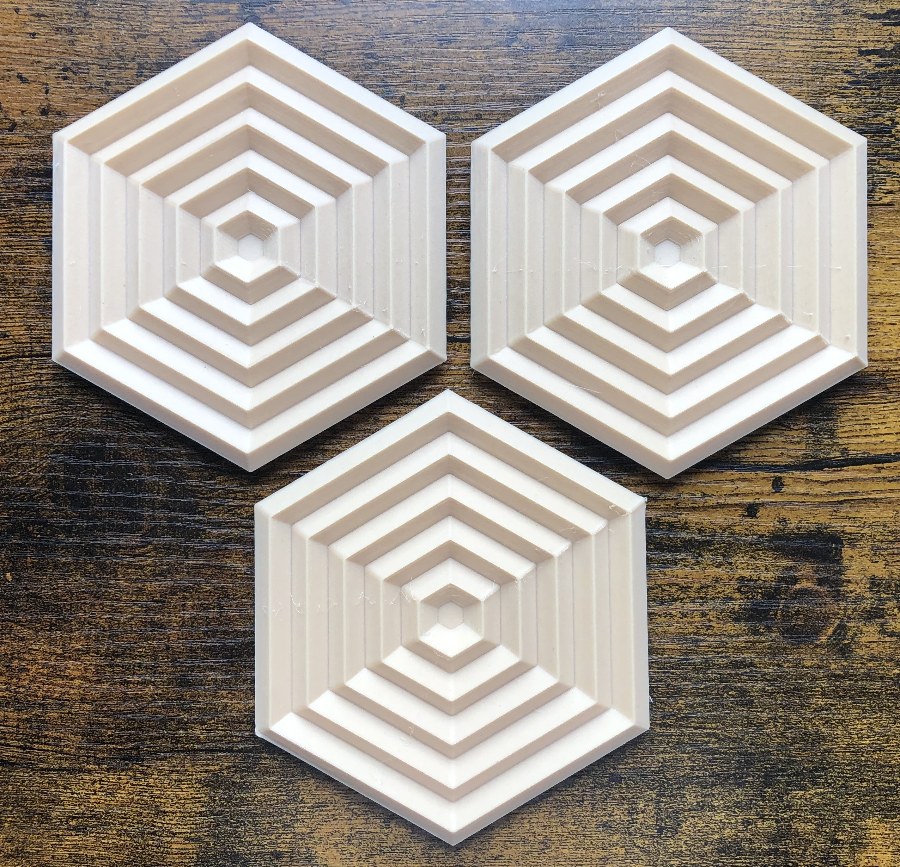
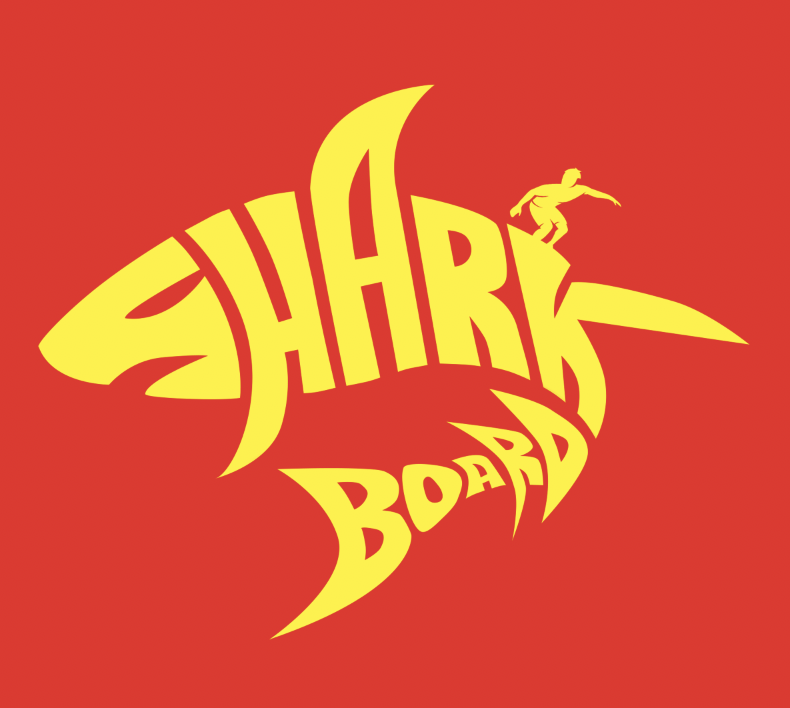

3D Printing
3D printing has allowed me to combine my engineering skills with my passion for design. Being able to materialize almost any shape allows me to be bounded only by my imagination. Using different filaments, I can construct anything from model rockets for my fluid dynamics class to functional action figures (Groot was my favorite!). Take a look at the custom geometric coasters I printed!
With 3D printing, I can employ several skills at once, which lets me brush up on my artistic side while also sticking to my roots as an engineer. Take the coaster example. I was in need of some that fit my woodland aesthetic and came across a design that I loved. The only issue: it was astronomically expensive for something I would put a cup on. My solution was to make it myself. I hopped on SOLIDWORKS, creating a design closely inspired by those I had found online. I threw my design into a slicer, popped in wood filament to my 3D printer, and had my coasters a day later for (almost) free! That is one of the joys I have found with 3D printing. The ability to make anything you can think of has inspired me to become more creative when engaging with problems or interests I encounter everyday.
Rug Making

Rug making, or tufting, is something that I have just recently gotten into. I was inspired by the many videos popping up on my Tik Tok and decided to give it a try. The learning curve was definitely steep, requiring me to invest in a tufting gun, learn how to use an electric drill to construct a tufting frame, and purchase more yarn than I would ever need. Pictured is the first (and currently the only) rug I have made. Naturally, I had to celebrate Trojan pride while fitting my own aesthetic.
This is another hobby that has combined a lot of my artistic interests. I get to use Procreate to draw my rug designs, project them onto the canvas and sketch the design, and begin tufting for hours and hours on end. Tufting has become a therapeutic and enjoyable hobby that I hope to have more time for this semester! Stay tuned for my next rugs which include, but are not limited to: Totoro, a puffle, and Snoopy.
Graphic Design
By now you may have guessed that I enjoy designing things. Particularly, I have always loved everything graphic design, including Procreate, Photoshop, Illustrator, AfterEffects, and PremierePro (shoutout Adobe). I have realized how valuable it is to be able to design in different spaces, whether it be a flyer for a Viterbi club or a poster for my undergraduate research. I have even gone so far as to delve into the space of branding, where I attempted to design my own shirt (take a look on the right!). While I am not sure what the product or company would be, I just think it looks cool.
Graphic design is something that I will continue to do as a hobby or even a side job as I continue with my career. It is a space far removed from engineering that allows me to express my artistic side. I hope to dive deeper into graphic design and enter new artistic spaces where I can heighten my skills, as I believe it is a hobby that comes with a lot of value!